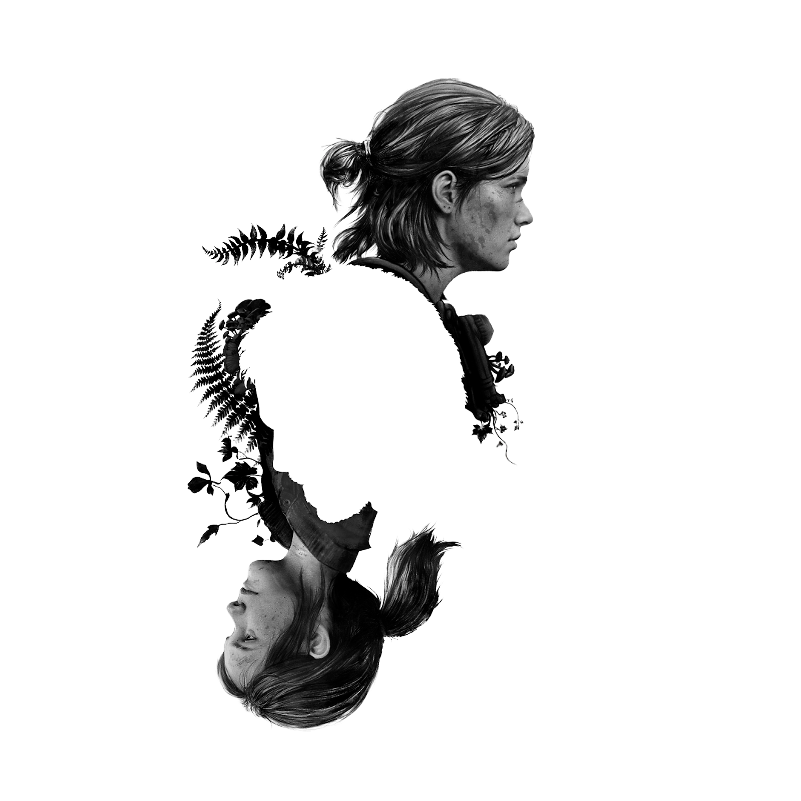

MAPA DE AUSTIN
Em The Last of Us Part I, Austin é onde a história começa. Joel vive lá com sua filha Sarah, e é na cidade que ocorre o surto inicial do fungo. A cidade simboliza o fim da normalidade e o início do colapso do mundo.

| Jogos The Last Of Us | |
|---|---|
| The Last of Us | Jogo original que acompanha Joel e Ellie em uma jornada por um mundo pós-apocalíptico devastado por uma infecção fúngica. |
| The Last of Us Remastered | Versão remasterizada do jogo original para PlayStation 4, com gráficos aprimorados e desempenho melhorado. |
| The Last of Us Part II | Continuação direta da história, agora focando em Ellie, explorando temas de vingança e redenção. |